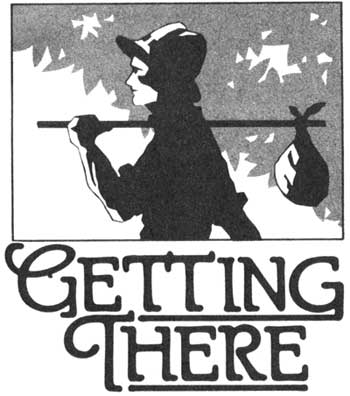
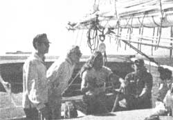

When one of our staffers wore her MOTHER T-shirt in Rio de Janeiro recently, she wasn't surprised to be stopped by some people who said, "Hey! We subscribe to that magazine!"
It seems, you see, that when MOTHER readers aren't on the old homestead building solar collectors, tending their livestock, putting up garden bounty, working on crafts projects, and so forth ... many of them are out enjoying the varied and wonderful sights, sounds, smells, cultures, and adventures that our beautiful planet has to offer.
This observation leads us to believe that you folks probably have some dynamite travel tips (and trips) to share with your "walking softly on the earth" fellow readers. We hope, therefore, that you'll help fill this new column with timely, moneysaving hints and unique vacation ideas straight from your personal experiences.
To share your "worldly" knowledge, send all pertinent information (such as current costs in the area visited, as well as the most economical means of making the trip) to: Getting There, THE Mother Earth News (restricted) , P.O. Box 70, Hendersonville, North Carolina 28791. But do keep your items short and sweet, as our space is limited.
In the meantime, we'd like to introduce you to a couple of travel-related organizations that we think are pretty special.
Featuring routes that follow safe and beautiful roads, freedom from mechanical worries, and comfortable lodgings and homecooked meals at country inns ... Vermont Bicycle Touring runs two-, three-, five-, and seven-day trips, which may be combined-without repetition-into excursions of up to 29 days.
According to your endurance, you can choose itineraries that vary from 15 miles a day on level roads to as much as 75 miles a day over the Green Mountains! Each tour participant is given a map and written directions, and rides at his or her own pace. However, VBT leaders (who are all good bike mechanics) are available to take care of any problems, and a well-equipped van carries luggage and spare parts-or gives lifts to tired cyclists-on the five and seven-day trips. There's also time to swim, browse in antique shops, visit historical sites, and picnic on village greens.
The cost of the tour-$96 for a weekend, $143 for three days, $239 for five days, and $329 for seven days-covers lodging, breakfasts, dinners, gratuities, and taxes. You can reduce those figures, however, by taking advantage of the VBT Fuel Saver's Discounts, which give you 50% off the price of bike rentals if you arrive by public transportation ... 50% off the first two rentals if you come four-in-a-car ... and 15% off the entire fee for your trip if you arrive by bicycle from 75 miles away, or by foot from 20!
For a free brochure, write to Vermont Bicycle Touring, Dept. TMEN, RD 3R, Bristol, Vermont 05443, or call 802/388-4011.
If you go to New York City occasionally (or if you live near the metropolis) you should check out Adventure on a Shoestring, an organization that has-for the last 17 years-shown New Yorkers and visitors an exciting (and inexpensive) side of the city that even most natives are unaware of.
Shoestringers have, for example, toured a yogurt factory, gone backstage at the Met, visited a subway training school for motormen and conductors, and stopped by a supposed school for panhandlers. They've chatted with a vampire researcher, a lie detection expert, and a psychiatrist who has studied "body language". On other occasions, the travelers have visited a professional hypnotist, a casting agent for TV commercials, the head of England's organization of 800 witches, and a prizewinning Broadway director in his townhouse.
They've taken lessons in handwriting analysis, flamenco dancing, and deep sea fishing ... attended the dress rehearsal of a Broadway musical ... provided the audience reaction for a recording session ... and sat in on an emergency meeting of the United Nations. Dinner at moderately priced restaurants is often included in the package.
The membership dues are $25 a year (which is less than some Broadway show tickets), plus a $2.50 fee for each event-six or so outings are scheduled every week-that you choose to attend. (A limited number of Shoestring activities are open to nonmembers at $3.50 per person for a single "adventure".) On occasion, there're additional costs for theater admission, helicopter rides, and the like ... usually at group discount rates.
For further details, call 212/265-2663, or drop a card to Adventures on a Shoestring, Dept. TMEN, 300 West 53rd Street, New York, New York 10019.
|
 Shoestringers take a New York harbor cruise on an 1889 two-masted schooner. |
 |
|